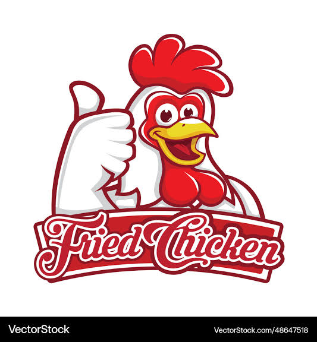

1. D'où vient notre inspiration ?
Notre concept s'inspire de la culture américaine du Fried Chicken, avec une identité adaptée à notre clientèle suisse.

Nous sommes une enseigne passionnée par le poulet frit. Nous souhaitons apporter une touche de gourmandise à chaque repas grâce à des recettes généreuse, un service accueillant et une ambiance conviviale.
Faire plaisir à nos clients en proposant du Fried Chicken savoureux, préparé avec soin et servi avec le sourire.
01 Le goût avant tout
02 Le goût avant tout
03 Le goût avant tout
04 Le goût avant tout
Vous avez des questions ? Nous avons les réponses.
1. D'où vient notre inspiration ?
Notre concept s'inspire de la culture américaine du Fried Chicken, avec une identité adaptée à notre clientèle suisse.
2. Comment préparez-vous votre poulet ?
Nous accordons une attention particulière à la préparation, à la panure et à la cuisson pour obtenir un poulet croustillant et savoureux.
3. Faites-vous des livraisons ?
Oui, nous proposons un service de livraison.
4. Proposez-vous des promotions ?
Nous proposons de nouvelles promotions toutes les semaines pour vous faire profiter de nos offres.